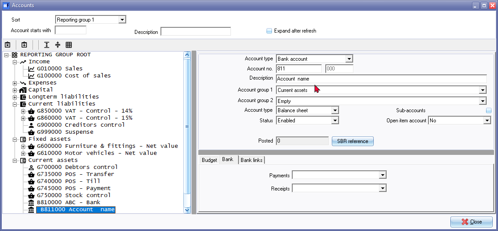
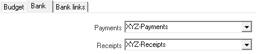

Create Bank accounts
On the Accounts, you may create a new bank account, change the descriptions of an existing account, or to delete an existing account.
You may have more than one Bank account and wish to add this to your Chart of Accounts. osFinancials5 will have set up a Bank account for you in your selected template. (In this example, account number “810-000 - Current Bank account” is used).
If you wish to add another Bank account remember that in planning your Chart of Accounts you would like accounts of a similar nature to be grouped together.
|
|
Bank accounts must be linked to a unique Payments and Receipts batch. You may create a new Payments and Receipts batch can create on the Bank tab when creating a new Bank account. You may edit the Batch type descriptions in Setup → Batch types. |

To create a new Bank account:
- On the Setup ribbon, select Setup → Accounts. The Accounts screen; listing your available accounts will be displayed.
- Select the last Bank account (e.g. “B820000 - Petty cash”) (Current assets – Reporting group).

- Click on the
 (Add:Account) icon (or select the Add on the context menu). An entry for the new bank account is displayed as “G821 Account name” on the Account list (the next Bank account code (incremented by 1), for example "820000" is selected, the next Bank account code will be "821000").
(Add:Account) icon (or select the Add on the context menu). An entry for the new bank account is displayed as “G821 Account name” on the Account list (the next Bank account code (incremented by 1), for example "820000" is selected, the next Bank account code will be "821000"). - Enter or select the following:
- Account type - Select “Bank Account”.
- Account no. - The main account “821” is displayed and cannot be edited. Type “830” in the account field.
- Description - Replace “Account name” with the new Bank account description e.g. “XYZ-Bank”.
- Account group 1 - Select the “Current assets” Account group.
- Account group 2 - Select Account group 2, if not selected.
- Account type - Select “Balance sheet”, since the Bank account needs to be reported on the Balance sheet.
- Sub-accounts - This field should not be selected, since bank accounts may not have sub-accounts.
|
|
If you select (tick) this field, the Bank tab will not be displayed. You will not be allowed to link the bank account to its own receipts and payments batch. |

- Status - “Enabled” (default) should be selected.
- Open item account - “No” (default) should be selected.
- Click on the Bank tab.

- Enter the unique name for the Payments and Receipts batches, e.g. “XYZ Payments” and the “XYZ Receipts”. This will automatically add (create) the batch types which may be edited in Setup → Batch types.
|
|
If you select any existing payments and/or receipts batch, an error message will be displayed. "Batch is linked to another bank. Please enter a unique name." Click on the OK button and enter a new name for the Payments and Receipt batches. |
|
|
Bank import plugin - Is included in the osFinancials5 Subscription - Bank Reconciliations Plugin Manual - BankImport Plugin Manual - If the “Default bank reconciliation method” option is not selected (tick removed) on the Setup → System parameters (Setup ribbon); the Payments and Receipts batch fields will be combined. You may then select either the Payments journal or the Receipts journal.
|


|
|
Once any transactions is posted (updated to the ledger) for a selected bank account; you cannot change the Payments or Receipts batches. |
- Click on the Save button.
|
|
The icon will change from |